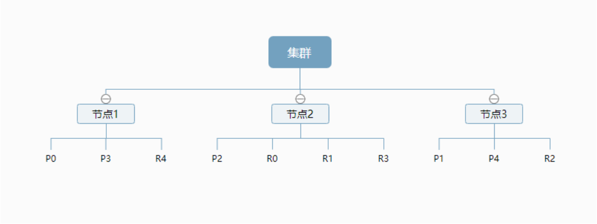
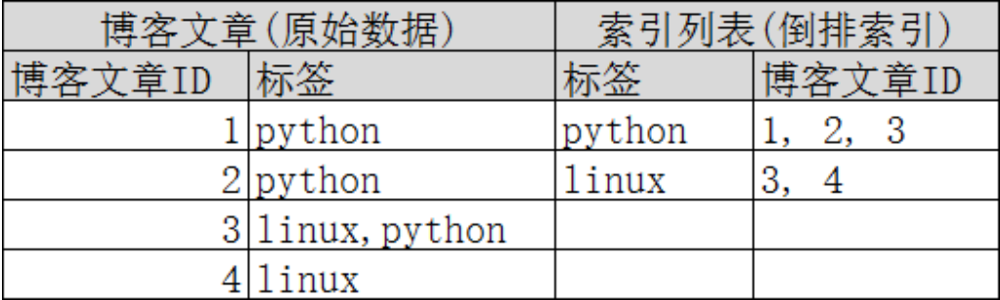

Elasticsearch概念
集群（Cluster）
集群是一个或多个节点(服务器)的集合，它们共同保存你的整个数据，
并提供跨所有节点联合索引和搜索功能。一个集群由一个唯一的名称标识，默认这个唯一标识的名称是”elasticsearch”。这个名称很重要，因为如果节点被设置为按其名称加入集群，那么节点只能是集群的一部分。
确保不要在不同的环境中用相同的集群名称，否则可能导致节点加入到错误的集群中。例如，你可以使用”logging-dev”, “logging-test”, “logging-prod”分别用于开发、测试和正式集群的名字。
节点（Node）
节点是一个单独的服务器，它是集群的一部分，存储数据，并参与集群的索引和搜索功能。就像集群一样，节点由一个名称来标识，默认情况下，该名称是在启动时分配给节点的随机通用唯一标识符(UUID)。如果不想用默认的节点名，可以定义任何想要的节点名。这个名称对于管理来说很重要，因为你希望识别网络中的哪些服务器对应于你的Elasticsearch集群中的哪些节点。
一个节点可以通过配置集群名称来加入到一个特定的集群中。默认情况下，每个节点都被设置加入到一个名字叫”elasticsearch”的集群中，这就意味着如果你启动了很多个节点，并且假设它们彼此可以互相发现，那么它们将自动形成并加入到一个名为”elasticsearch”的集群中。
一个集群可以有任意数量的节点。此外，如果在你的网络上当前没有运行任何节点，那么此时启动一个节点将默认形成一个单节点的名字叫”elasticsearch”的集群。
索引（Index）
索引是映射类型的容器，elasticsearch中的索引是一个非常大的文档集合。索引存储了映射类型的字段和其他设置，然后它们被存储到了各个分片上。相当于“数据库”。
类型（Type）
类型是索引内部的逻辑分区(category/partition)，然而其意义完全取决于用户需求。因此，一个索引内部可定义一个或多个类型(type)。一般来说，类型就是为那些拥有相同的域的文档做的预定义。例如，在索引中，可以定义一个用于存储用户数据的类型，一个存储日志数据的类型，以及一个存储评论数据的类型。类比传统的关系型数据库领域来说，类型相当于“表”。
根据规划，Es6.x 版只允许每个 Index 包含一个 Type，7.x 版将会彻底移除 Type。
文档（Document）
就是我们的一条条数据
之前说elasticsearch是面向文档的，那么就意味着索引和搜索数据的最小单位是文档，elasticsearch 中，文档有几个 重要属性 :
1.自我包含，一篇文档同时包含字段和对应的值，也就是同时包含 key:value！
2.可以是层次型的，一个文档中包含自文档，复杂的逻辑实体就是这么来的！ {就是一个json对象！ fastjson进行自动转换！}
3.灵活的结构，文档不依赖预先定义的模式，我们知道关系型数据库中，要提前定义字段才能使用， 在elasticsearch中，对于字段是非常灵活的，有时候，我们可以忽略该字段，或者动态的添加一个 新的字段。
尽管我们可以随意的新增或者忽略某个字段，但是，每个字段的类型非常重要，比如一个年龄字段类 型，可以是字符 串也可以是整形。因为elasticsearch会保存字段和类型之间的映射及其他的设置。这种 映射具体到每个映射的每种类型，这也是为什么在elasticsearch中，类型有时候也称为映射类型。
映射（Mapping）
ES中，所有的文档在存储之前都要首先进行分析。用户可根据需要定义如何将文本分割成token、哪些token应该被过滤掉，以及哪些文本需要进行额外处理等等。另外，ES还提供了额外功能，例如将域中的内容按需排序。事实上，ES也能自动根据其值确定域的类型。
分片（Shard）和副本（Replica）
ES的“分片(shard)”机制可将一个索引内部的数据分布地存储于多个节点，它通过将一个索引切分为多个底层物理的Lucene索引完成索引数据的分割存储功能，这每一个物理的Lucene索引称为一个分片(shard)。每个分片其内部都是一个全功能且独立的索引，因此可由集群中的任何主机存储。创建索引时，用户可指定其分片的数量，默认数量为5个。
Shard有两种类型：primary和replica，即主shard及副本shard。Primary shard用于文档存储，每个新的索引会自动创建5个Primary shard，当然此数量可在索引创建之前通过配置自行定义，不过，一旦创建完成，其Primary shard的数量将不可更改。Replica shard是Primary Shard的副本，用于冗余数据及提高搜索性能。每个Primary shard默认配置了一个Replica shard，但也可以配置多个，且其数量可动态更改。ES会根据需要自动增加或减少这些Replica shard的数量。
简单点就是：当有大量的文档时，由于内存的限制、磁盘处理能力不足、无法足够快的响应客户端的请求等，一个节点可能不够。这种情况下，数据可以分为较小的分片。每个分片放到不同的服务器上。
当你查询的索引分布在多个分片上时，ES会把查询发送给每个相关的分片，并将结果组合在一起，而应用程序并不知道分片的存在。即：这个过程对用户来说是透明的。
| Relational DB | Elasticsearch |
|---|---|
| 数据库(database) | 索引(indices) |
| 表(tables) | 类型(types) |
| 行(rows) | 文档(documents) |
| 字段(columns) | 字段(fields) |
一个集群至少有一个节点，而一个节点就是一个elasricsearch进程，节点可以有多个索引默认的，如果 你创建索引，那么索引将会有个5个分片 ( primary shard ,又称主分片 ) 构成的，每一个主分片会有一个 副本 ( replica shard ,又称复制分片 )

上图是一个有3个节点的集群，可以看到主分片和对应的复制分片都不会在同一个节点内，这样有利于某 个节点挂掉 了，数据也不至于丢失。 实际上，一个分片是一个Lucene索引，一个包含倒排索引的文件 目录，倒排索引的结构使 得elasticsearch在不扫描全部文档的情况下，就能告诉你哪些文档包含特定的 关键字。 不过，等等，倒排索引是什 么鬼?
倒排索引
elasticsearch使用的是一种称为倒排索引的结构，采用Lucene倒排索作为底层。这种结构适用于快速的 全文搜索， 一个索引由文档中所有不重复的列表构成，对于每一个词，都有一个包含它的文档列表。 例 如，现在有两个文档， 每个文档包含如下内容：
1 | Study every day, good good up to forever # 文档1包含的内容 |
为了创建倒排索引，我们首先要将每个文档拆分成独立的词(或称为词条或者tokens)，然后创建一个包 含所有不重 复的词条的排序列表，然后列出每个词条出现在哪个文档 : | term | doc_1 | doc_2 | | ——- | —– | —– | | Study | √ | x | | To | x | × | | every | √ | √ | | forever | √ | √ | | day | √ | √ | | study | × | √ | | good | √ | √ | | every | √ | √ | | to | √ | × | | up | √ | √ | | | | |
现在，我们试图搜索 to forever，只需要查看包含每个词条的文档 | term | doc_1 | doc_2 | | ——- | —– | —– | | to | √ | × | | forever | √ | √ | | total | 2 | 1 |
两个文档都匹配，但是第一个文档比第二个匹配程度更高。如果没有别的条件，现在，这两个包含关键 字的文档都将返回。
再来看一个示例，比如我们通过博客标签来搜索博客文章。那么倒排索引列表就是这样的一个结构 :

如果要搜索含有 python 标签的文章，那相对于查找所有原始数据而言，查找倒排索引后的数据将会快 的多。只需要 查看标签这一栏，然后获取相关的文章ID即可。完全过滤掉无关的所有数据，提高效率！
elasticsearch的索引和Lucene的索引对比
在elasticsearch中， 索引 （库）这个词被频繁使用，这就是术语的使用。 在elasticsearch中，索引被 分为多个分片，每份 分片是一个Lucene的索引。所以一个elasticsearch索引是由多个Lucene索引组成 的。别问为什么，谁让elasticsearch使用Lucene作为底层呢! 如无特指，说起索引都是指elasticsearch 的索引。
接下来的一切操作都在kibana中Dev Tools下的Console里完成。基础操作！